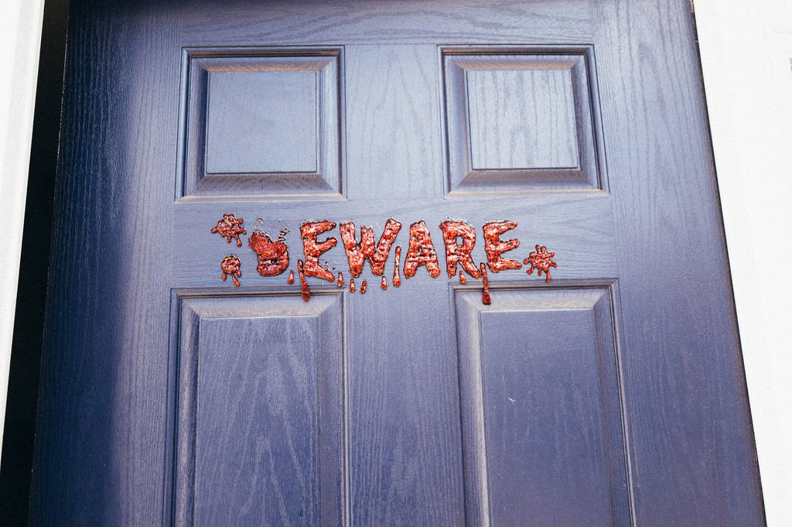

XML parsing¶
untangle¶
untangle is a simple library which takes an XML document and returns a Python object which mirrors the nodes and attributes in its structure.
For example, an XML file like this:
<?xml version="1.0"?>
<root>
<child name="child1">
</root>
can be loaded like this:
import untangle
obj = untangle.parse('path/to/file.xml')
and then you can get the child element’s name attribute like this:
obj.root.child['name']
untangle also supports loading XML from a string or a URL.
xmltodict¶
xmltodict is another simple library that aims at making XML feel like working with JSON.
An XML file like this:
<mydocument has="an attribute">
<and>
<many>elements</many>
<many>more elements</many>
</and>
<plus a="complex">
element as well
</plus>
</mydocument>
can be loaded into a Python dict like this:
import xmltodict
with open('path/to/file.xml') as fd:
doc = xmltodict.parse(fd.read())
and then you can access elements, attributes, and values like this:
doc['mydocument']['@has'] # == u'an attribute'
doc['mydocument']['and']['many'] # == [u'elements', u'more elements']
doc['mydocument']['plus']['@a'] # == u'complex'
doc['mydocument']['plus']['#text'] # == u'element as well'
xmltodict also lets you roundtrip back to XML with the unparse function, has a streaming mode suitable for handling files that don’t fit in memory, and supports XML namespaces.